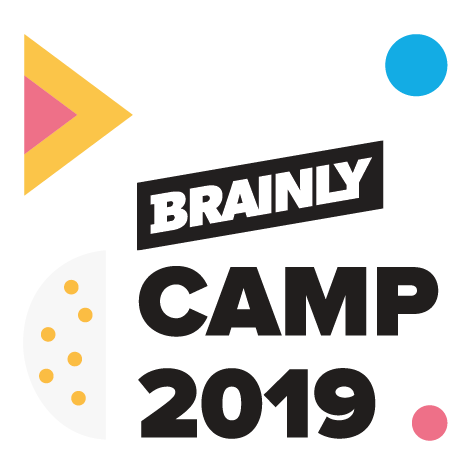
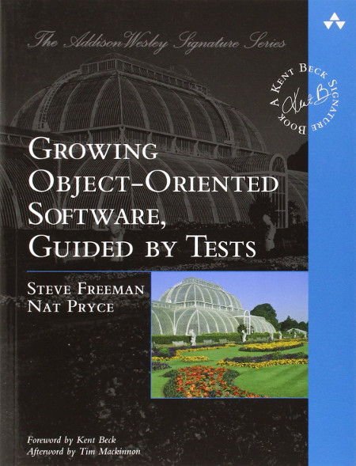
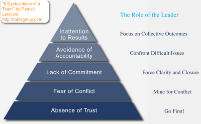
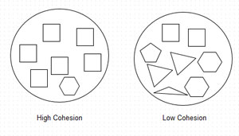
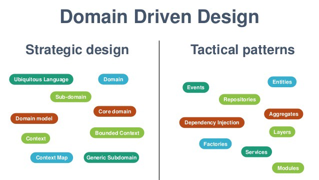
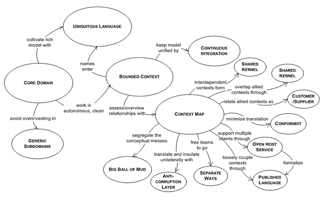
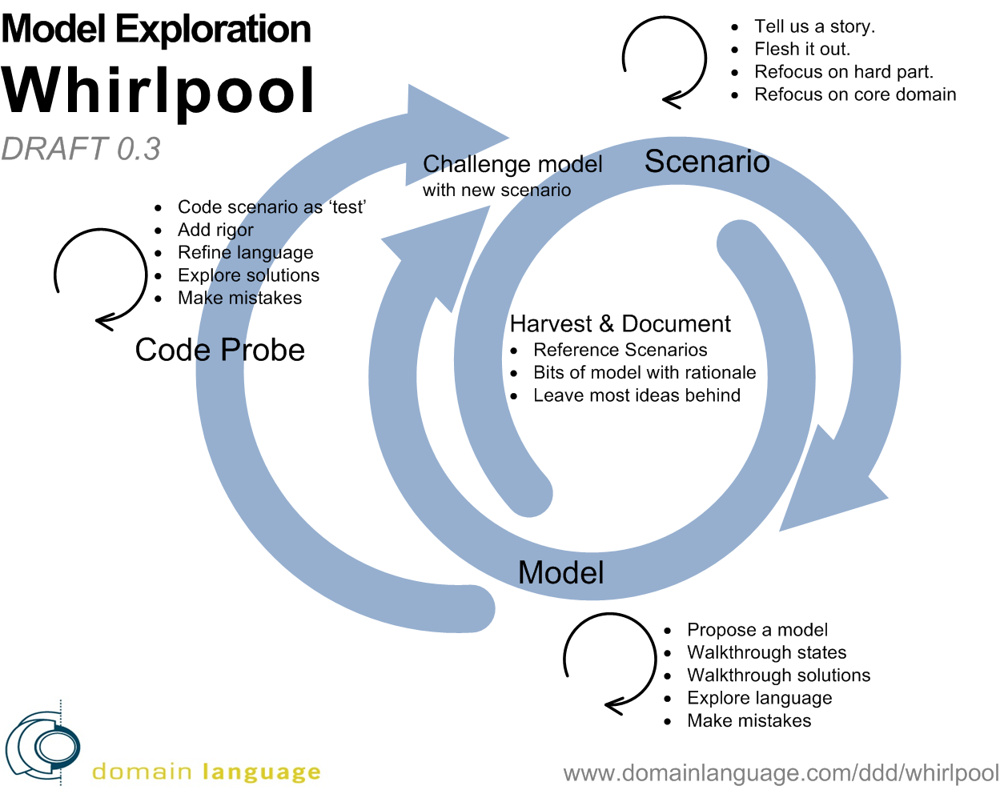

God forbid bottom-up (physics will punish you if you do)!
Domain Driven Design
DDD, domain, domain expert, modelling, ubiquitous language, building blocks, model and OO, whirlpool, contexts, system map

Tomasz Borek, @LAFK pl,
In a nutshell
- DDD
Domain Driven Design, a way of creating software that uses a business language everywhere, from requirements gathering, through model, code and tests. Usually done with a domain expert(s), it employs several techniques which are roughly divided into tactical and strategic.
Definition mine.
UML and electrical engineers
or how Eric Evans was struck by an inspiration
Ubiquitous language
ubiquitous == omnipresent
tests, docs, code, issues, manuals
customers, BAs, POs, support, devs, QAs
it’s about unambiguous vocabulary
Domain
domain expert is your guide
business invariants, rules, facts, processes
problem reality
this - you model, distill, isolate and rid of complexity
Contexts, maps, boundaries
map the contexts
context per team is possible
define boundaries
mental and org level
New modelling techniques
context mapping
whirlpool
event storming
Strategic patterns
work within Conway’s Law and bounded contexts
problem separation reflected in teams cooperation
should be clear from a context map
work across boundaries
not every piece of the system is equally important
Tactical patterns
address code organization
work within boundaries
design patterns
so-called building blocks
Testing
frequently employes BDD and variants cause language
TDD, ATDD sure
acceptance used heavily in whirlpool
How DDD affects SDLC phases?
all of them, some more than others, some if we pull other 'symbiotic' techniques
Today’s rules
Tempo - as you wish.
Questions - as we go.
Break - one half-way through.
About Sages
Trainings and advisories for IT professionals
for companies in IT and outside, as long as it’s about software
Sages' mission statement
Company’s mission is to support the process of designing, creating and deploying software in corporations and public institutions, to minimize cost, time and risk associated with these endeavours.
http://www.sages.com.pl/sages
— Sages - o nas
— Sages - o nas
translation mine
About me, when not representing Sages


My jobs include
audits of: code, infra, components, design, systems
performance or security tests and audits
dealing with DBs, OS', networks or security
programming jobs
lectures, talks, workshops, trainings
Questions?
| appears rarely, so don’t wait for it |
Next steps
be it books, reading or exercises
Books
who has read…


Older though good about OO through tests?

about architecture documentation? Chapter 3 onwards…
Lighter reading
articles by Bottega
their project, Leaven
most things by authors mentioned earlier or later
Exercises
archi-kata
small modelling exercises
small example in various ways, to see what DDD brings
and in a different order
callisthenics
event storming
whirlpool
People
Eric Evans,
Vaughn Vernon,
Alberto Brandolini, @ziobardo
Piotr Wyczesany,
Sławomir Sobótka,
Łukasz Szydło
Questions?
Word about modelling
In or out of DDD, along with its ailments
Simplification
Modelling was never meant to "take in all"
We skip parts we don’t need or don’t care about
It’s a simplified image
Complexity
Accidental or Essential
Essential complexity
may be inherent to current problem
may be inherent for problem domain
Accidental complexity
is a result of our actions
organizational structure influences how we code
I can’t wait that long for extra sever so…
no DBAs, so I’ll solve this in code
usually I’d collect data to create user persona but…
is a result of choices made (tools, libs, tech-debt…)
Complexity
should be reduced overall
essential may be hard to do so
accidental therefore should be eliminated all the more
CRC cards
- CRC
Class Responsibility Collaborators, modelling technique from XP, which just a bit fails with the responsibility part IMO, at least the way it was defined back when XP emerged

Problems with CRC?
responsibility is not a list of attributes or methods
should not be left empty
holds value as a responsibility means failing to encapsulate
doesn’t scale
Universal Modelling Language
a standard borne from 3 - agreeably! :O
extensible with various diagrams and extensions if needed
Problems with UML?
unwieldy - tools were rather heavyweight
hermetic - explain stereotype to a client
not simple - which diagram to choose from 15 types?
Recently C4
but that’s recent (fairly, 2011/2012 or so IIRC)
doesn’t address Conway’s law
not very pattern-oriented
UML distilled and simplified
lightweight - has its advantages
Old techniques
storytelling
customer interviews
requirement discovery
| Chaos reports: user interaction and requirements! |
Business - IT
business talks in estimates (commitments)
IT talks in estimates (guesses)
different jargon (may well not understand each other)
5 dysfunctions of a team

Conway’s law
organizations which design systems … are constrained to produce designs which are copies of the communication structures of these organizations.
Melvin Conway
— Conway's Law
— Conway's Law
To which DDD says
everything can be addressed, if we speak same language as business does
Structured programming
yeah, before OOA/OOD/OOP even - we did programming then! ;-)
coupling (Larry Constantine, late 1960', Structured Design)
cohesion (Larry Constantine, late 1960', Structured Design)
Connascence (Meilir Page-Jones, 1992, Comparing techniques by means of encapsulation and connascence)
Coupling
- Tight / Loose Coupling
degree of procedures' (later also object’s) interwovenness, tells how dependent modules are of each other
Cohesion
- High / Low Cohesion
how similar are methods of a given objects / procedure gathered in a given module


It’s all very well but…
This actually pushes the problem down to a module.
Connascence
two components are connascent if a change in one would require the other to be modified in order to maintain the overall correctness of the system
Connascence
— Wikipedia
— Wikipedia
Connascence defined
The ideals of low coupling and high cohesion now generalize beyond structured design and yield a statement that is applicable to object-oriented design (or indeed to any future design paradigm with partitioning, encapsulation and visibility rules):
his paper on connascence
— Meilir Page-Jones
— Meilir Page-Jones
Eliminate any unnecessary connascence and then minimize connascence across encapsulation boundaries by maximizing connascence within encapsulation boundaries.
his paper on connascence
— Meilir Page-Jones
— Meilir Page-Jones
Good design metrics and standards then?
failed (coupling, cohesion)
not marketed enough (connascence - a shame)
were not that great for a larger projects (CRC cards)
were a standard, but a bit scary / unwieldy (it’s you, UML)
We’re pretty much left with storytelling, interviews, reqs discovery etc.
What DDD offers?
tactics & strategy
event storming
whirlpool
context mapping (no, not the UI/UX one, this one’s older)
and new building blocks!
Tactics and strategy?

DDD tactical bricks

Value Objects
Wrappers, Containers - great for refactoring
a design pattern
first step when introducing DDD
take a bunch of primitives reflecting a concept
give them a name / codify as a type
no identity, not unique
VO implementations
PhoneNumberor aPostalCodeoften immutable
often in method parameters
Entities
have identity, we compare them using it
our crucial concepts are most likely Entities
similar to EJB or DB entities but POJOs
Aggregates
object graphs and/or groups (of VOs and entities)
untouchable, immutable - outside of it you work on copies
this we use to model our domain
Aggregate root
root of the aggregates serves as point of entry
said root is an entity and contains operations on the aggregate
ensures data correctness and consistency through its operations
keeps system invariants
uses delegation and composition
this is why we have rich domain model

System invariants
if A grows, B decreases
you can’t do X twice in a row
Repositories
realizes persistence
works with infra-objects, like DAO, ORMs code
abstracts away the specifics
encapsulates data access and related logic
nowadays in some cases interchangeable with DAO
a design pattern, that introduces a new layer
Domain Services
for operations that don’t belong to any entity - and hence to no aggregates either
Factories
produce aggregates, ensuring their correctness
codifies creation logic, so usually some construction DPs are involved
increases testability, decreases complexity, extracts creational details
Advanced building bricks
sagas
specifications
policies
services
Not today, but do read about them
Strategic design

Bounded Context then?
- Bounded Context
The setting in which a word or a statement appears that determines its meaning
Eric Evans would say: cannot change the meaning
Travelling context map
Draw what you know. Send to next person and ask him to fill something till insert date here. Rinse and repeat.


Name all Bounded Contexts
Bounded contexts should have a name so that you can talk about them.
— Eric Evans
Why "Bounded"?
Separates on multiple levels:
mental - different thinking
architectural - different system invariants or requirements
organizational - different teams, departments, locations
vocabulary - same term has different meaning
code - same object has different fields/methods
Between contexts
Distilling domains
Drawing context map
Identifying contexts otherwise allows seeing their relationships === SP Continuous Integration . Integrate people as you can: co-location, ubiquitous language, share teams special know-hows with others
Requires one manager for all teams
- TIP: SP
here: strategic pattern
SP Anti-corruption layer, ACL
usually via proxy
translation / protection layer
you shall not pass, you abstraction from another bounded context you
SP Shared kernel
if shared DB - wrong
if shared aspect - all right
partnership between teams needed
SP Separate ways
independent teams, independent software
SP Big Ball of Mud
happens to the best of us
just isolate it and make sure it doesn’t contaminate others
| did someone just said "integration deadline"? |
SP Conformist
one team must conform to the other
sucks to be on that team if the others are not playing nice
ACL all the things!
SP Customer/Supplier
fairly straightforward relationship
web-services are a fine example
Distilling the domain: core
- Core Domain
if you don’t have it, you don’t have a product
Core Domain is something that directly traces to the business strategy, to the organization strategy
Strategic Design
— Eric Evans
— Eric Evans
Hard to spot without answering "how the org wants to use software to leverage their strategy?"
To distill, ask yourself
why write and NOT buy or outsource?
Generic domain
accounting, ERP - unless you’re in accounting of course
share/like/social integration - unless you sell it
off the shelf, outsource - sure
Supporting domain
accounting, ERP - unless you’re in accounting of course
ranking of a product on Amazon - support
| it changes with time, in few years the classification may differ |
| if you don’t differ on core, support is what makes/breaks the deal |
Context mapping
Points
terms change their meanings between contexts, but NOT inside
no leaks - context dictates what you mean when you say "student"
separation of concerns
YAGNI
context map makes the boundaries explicit
Examples how context matters
Census System –
Addressis unique, so an entityBook Rental -
Addressis just a part ofLibraryUser, so a VOStudent in financial context has a name, surname, index number and an account.
Student in student records has no bank account, but has courses and grades
Account in profiling and in payments
Detailed walkthrough
Whirlpool
- Whirlpool
in DDD, whirlpool is an approach to producing software, which offers an iterative process with 3 steps: scenario, model and finally code probe (here loop restarts). Whirlpool focuses on creating and revising a dictionary throughout the entire process.

About
it’s called 'model exploration' technique
it uses storytelling and customer interviews
mistakes are taken into account through iterations
new scenarios should unearth them
new insights yield better questions and vocab
obviously dependent on domain experts available
When the language is missing?
team talks about
FakeOrderorTempItem(no relation to business domain)Scrum Velocity drops, lavaflow kicks in
we start hacking around our too complex model
accidental complexity rises, so does technical debt
How we build the language
expert and us flesh out a story - business processes descriptions
model is built, with state changes
code probe delivers services, class headers - walking skeleton approach
we formalize the scenario through live docs - BDD tests
Formalizing our code-probed scenario
BDD and acceptance scenario
Given(Expert) -When(Programmer) -Then(Expert)
Event storming
or how to use post-its for everything
Most important slide here!
don’t pull a post-it in any other way than left to right, parallel to glued edge
| this is THE most important slide in your entire life. Epic, isn’t it? |
Gather the right people
who has the knowledge
different teams
mesh them together
Steps
| there’s more than 4 steps but we don’t have time |
Modelling problems and DDD then
silos / Conway’s law within org
business to IT communication
measuring / testing the model
transition from model to code
fishing for facts to model / domain know-how
simplifying the domain
Communication
unambiguous language
ubiquitous language
contexts, bounded
solved
Conway’s law
strategic patterns
context mapping for bounded contexts
solved
good modelling metrics
no communication problems
little / no primitives in code
connascence
solved
testing the model
whirlpool
TDD, BDD, ATDD
testing bounded contexts
in isolation
as black boxes if needed
from model to code
tactical patterns
building blocks
solved
domain complexity
smaller accidental - we model less
essential may be reduced by distilling the domain
building blocks / tactical patterns
isolation with layers / boundaries
solved
fishing for domain knowledge
event storming
whirlpool
old techniques still valid
solved
Questions?
Which model to choose?
And which dominates in practice?
Anemic model advantages
always clear where to put what
easy code generation (hundreds of classes - sure)
IDE generates get/set pairs for ya
tools can work on this code automatically
coding follows rules
Anemic model disadvantages
tech-packages screw encapsulation
defaultwas never meant to bepublicfunctional packages mean package access is fine
everything to everything, so why not call what shouldn’t be called?
no behaviours, just state manipulation, domain expresses nothing
changing behaviours is constant, but with state manipulation?
A Java example
package com.agency.recruitment.ta;
/**
* Simplified from original
**/
public class Acquisition {
// cut
public void close(/*5 params here*/) { (1)
// null-checks and other defensive mechanism, FF and the like
AgencySession agencySession = SessionManager.getSession();
CurrentUser cu = agencySession.getCurrentUserPrincipal().getCurrentUser();
Candidate candidate = cu.getRecentItems().getVacancy().getCandidate();
Employee employee = new Employee(); (2)
employee.setFirstName(candidate.getFirstName());
employee.setLastName(candidate.getLastName());
employee.setArchivingPolicy(candidate.getArchivingPolicy()); (3)
employee.setCurrentRate(candidate.getCurrentRate()); (4)
employee.setEmploymentType(candidate.getEmploymentType()); (5)
employee.setPermanentEmployment(candidate.isPermanentEmployment());
employee.setJobTitle(candidate.getJobTitle()); (6)
employee.setJobSeniority(candidate.getJobSeniority());
employee.setDepartment(candidate.getDepartment()); (7)
employee.setCompany(candidate.getCompany());
employee.setCountry(candidate.getCountry());
employee.setCity(candidate.getCity());
boolean wasClosed = cu.getRecentItems().getVacancy().tryClosing(); (8)
if (!wasClosed) { (9)
// log, throw
}
// method continues
}1. get the candidate
public void close(/*5 params here*/) {
// null-checks and other defensive mechanism, FF and the like
AgencySession agencySession = SessionManager.getSession();
CurrentUser cu = agencySession.getCurrentUserPrincipal().getCurrentUser();
Candidate candidate = cu.getRecentItems().getVacancy().getCandidate();returns
void,input has no candidates
classic trains, to get to the candidate
2. optional setters?
not here, not all, but some
slight variations in their calls? sure
parameterless c-tor call
little subclassing, so
EmployeeTypeset regardless ofisPermanent
3. domain problems or not?
seniority sometimes would be in the job title
location wasn’t conceptualized, so we would set:
country and region and city and postal-code sometimes
company and department
rate was virtually always displayed in local rates
some customers had distributed departments, some had them 'uni-located'
4. what do those mean?
vacancy, job offer, applicant, candidate, posting, advertisement, position
Alternative?
Employee newHire = candidate.hire();
same logic every time, codified
on a Candidate, not a side-effect when closing Acquisition
business language maps to object.method() - ubiquitous language
easier to grasp and learn the relevant domain process
Anemic2Rich in steps
identify concepts and wrap them
extract classes, note variants and deal with them
connected objects should stay connected - use aggregates
transform the aggregate A into aggregate B with a service if needed
stay within boundaries of your current context
go across boundaries according to proper procedures
Id the concepts - location
employee.setCountry(candidate.getCountry());
employee.setCity(candidate.getCity());package com.agency.recruitment.ta;
import net.jcip.annotations;
/**
* Wraps around location-related items, to speed up search and codify related operations.
* Verifies if location is same as another
**/
@Immutable
class Location {
// city, country, coordinates
boolean isSame(Location other) { (1)
return Objects.equals(city, other.city) && Objects.equals(country,other.country);
}
boolean isWithinRadius(int kms, Location from) { (2)
return compareByCoordinates(kms, from);
}
}| 1 | different names for same location - no longer a problem if this would be done cleverly |
| 2 | there are cases when candidates look for a job in a given radius |
Id the concepts - rate
employee.setCurrentRate(candidate.getCurrentRate());package com.agency.recruitment.ta;
import net.jcip.annotations;
/**
* Codified rates, along with their currencies.
**/
@Immutable
class Rate {
BigDecimal amount; (1)
Currency currency; (2)
(3)
}| 1 | cause various dinars (and few others) don’t have 1:100 step |
| 2 | and now currency is unchangeable and may be immutable (like enum) |
| 3 | possible to add currency conversions, raises, spreads, etc., just return a new Rate object, changed appropriately |
DDD advantages
ubiquitous language
prose in the code
business talks, dev maps to object.method call
rich domain model - has behaviours
easy reading / changing
harder for lazyness, fear or difficulties to make one reluctant to change the code
DDD drawbacks
so strong as your domain expert’s knowledge - more of a limitation
most people stop at tactical level
What to choose?
Team skills and domain expert know-how are primary factors.
Questions?
SDLC
- SDLC
Software Development Life Cycle
idea → requirements
design (modelling)
coding → testing
deployment
maintenance
sunsetting the product
And DDD?
All of them if we want. Most of them if done somewhat right.
Symbiotic or friendly technologies and solutions may increase the effect.
Friendly to DDD
layered architecture
hexagon architecture, or ports and adapters
well-done OOP (encapsulation, no/little state-sharing)
BDD, ABDD, ATDD and relevant libraries
microservices if done right (as well as our modelling)
strong domain experts
DDD actually is tech-agnostic.
Requirements phase and DDD
domain expert
distilling domain (core, support…)
whirlpool, event storming
ubiquitous, unabiguous language
Modelling phase and DDD
whirlpool
event storming
language
domain focus
rich domain model
Coding…
building blocks
patterns (tactical and design)
Maintenance…
clear code through building blocks
reflects domain so strong and protected invariants
domain truths usually coded down
bounded contexts and ACLs
strategic patterns help form cooperation rules between departments
Testing…
acceptance tests
behaviour-driven tests
'normal', unit- and or system tests
easier integration tests - bounded contexts
xDD

Deploy…
may be easier if contexts separated
with good µservices where 1 µserv. means 1 bounded context - easy
with distributed monolith usually somewhat harder
least gain per se
Questions?
Summarizing
Helps through all the phases of SDLC
Strategic, tactical, language, model
Event storming, whirlpool, context map
New way if thinking
technology-agnostic
domain-centric
one language to rule them all
Word cloud
if existing project - get a word cloud from code to see concepts and try finding your ubiquitous language terms that way
Modelling metrics
Coupling, cohesion - meh
Connascence - better
Function-centric packages, not technical ones
Code is a prose
Good OOP
Contexts
have names
keep meaning true
are multi-level: org, mental, vocab…
minimum aggregate is one entity
minimum context is one aggregate…
DDD tactics
VO and Entities together create Aggregates
Factories encapsulate creation logic
Repositories abstract away data persistence access layer
There’s more
DDD strategies
org structure will influence your contexts
ubiquitous, unabimguous language
between contexts: relationships
Anti-Corruption Layer protects meaning from leaking or changing
Continuous Integration supports heavy and non-stop cooperation
Customer - Supplier is BAU
Conformist is when it goes to hell (bad Supplier)
There’s more
Domains
core, support, generic
invest in core, buy generic
change in time
distilling may cut complexity
Modelling techniques
CRC, UML, C4
storytelling, requirements discovery, customer interview
whirlpool, context map, event storming
Context map
can be found after several aggregates are drawn
can be seen after event streams in event storming are done
makes concepts visible, can help with domain distilling
Wandering?
draw what you will
pass to next person so he can do the same
collect or wait once it gets back
Archi-kata
gather reqs for target architecture
group people, reserve 3 hours
each group designs and presents, questions are a must
You can also hire Tomek to facilitate
Coding DDD
start with VOs, identify - name - codify
entites next
aggregates are key
1 entity == min aggregates
1 aggregate == min bounded context
then services and more advanced tactics
Better?
start with modelling, it’s number 1
context map - distill domains
event storm - find aggregates, choke points
whirlpool - steady influx of terms to language
ubiquitous and unabigous language
perhaps hexagon, it won’t auto-evolve
test with TDD/ATDD/BDD to prove your model